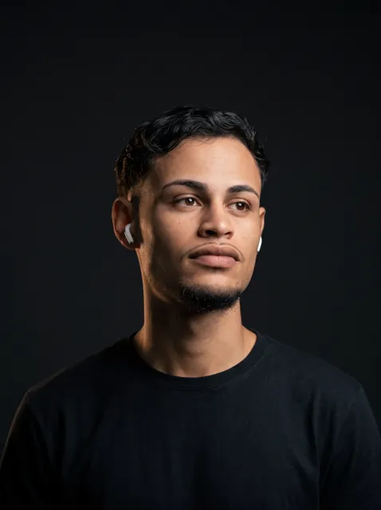

- Visual do site ruim e limitado
- Investimento alto para captar clientes
- Valor baixo de criação
Pior opção de sites
Design + desenvolvimento
SEO + performance
Não faço só site bonito. Faço site que vende.
Solicitar orçamento↗Pense nisso
Antes de entrar em contato, o cliente pesquisa, compara e procura motivos para confiar. Nesse momento, sua presença digital fala pela sua empresa.
Não basta estar na internet. É preciso uma presença que faça sua empresa ser lembrada, valorizada e escolhida.
Solicitar orçamento↗Comparativo
Pior opção de sites
Melhor opção de sitesrmsites*
Crie seu site com uma empresa profissional, da maneira certa, para não desperdiçar dinheiro e oportunidades, garantindo uma presença online sólida e eficiente para o crescimento do seu negócio.
Como funciona
Um site bonito ainda pode vender mal o seu trabalho. Por isso o processo começa pelo seu negócio, e o design vem depois.
Conversamos sobre sua especialidade, seu cliente ideal e o que ele precisa perceber antes de escolher você.
Organizo a mensagem, a oferta e a ordem dos argumentos para levar o visitante até o contato.
Cada projeto é desenhado do zero para o seu contexto, sem modelo pronto em que só se trocam cores e textos.
Publico com SEO e estrutura para Google e buscadores de IA. Do início ao fim, você trata diretamente comigo.
Do planejamento à publicação, você trata diretamente comigo.
Quero começar↗Projetos
Cada projeto é pensado para a identidade, o público e os objetivos de cada negócio.
Processo
Você me conta objetivo, público e o que o site precisa resolver.
Estudo seu negócio e organizo estrutura e mensagem.
Design e código do zero: rápido, responsivo e feito para vender.
Você vê a primeira versão e aprova ou pede ajustes.
Velocidade, SEO e testes finais antes de publicar.
Site no ar, pronto para receber clientes.
Serviços
O formato ideal depende do seu momento, da sua necessidade e do resultado que você quer alcançar.
Uma apresentação completa da sua empresa, seus serviços, diferenciais, história e formas de contato.
Ideal para negócios que precisam fortalecer sua credibilidade e apresentar sua estrutura profissionalmente.
Pedir orçamento↗Uma página desenvolvida para apresentar uma oferta, serviço ou campanha com comunicação direcionada e foco em conversão.
Ideal para empresas que trabalham com anúncios e captação de clientes.
Pedir orçamento↗Uma experiência objetiva que reúne as principais informações do negócio em uma única página.
Ideal para profissionais e empresas que precisam de uma apresentação digital direta e eficiente.
Pedir orçamento↗Uma estrutura completa para apresentar produtos, organizar categorias e vender pela internet.
Ideal para empresas que querem ampliar seus canais de venda e alcançar novos clientes.
Pedir orçamento↗Jornada do cliente
O cliente encontra sua empresa por meio do Google, redes sociais, anúncios ou indicação.
Ele acessa seu site e começa a conhecer sua marca, seus serviços e sua estrutura.
Uma apresentação clara e profissional ajuda a transmitir segurança e demonstrar seu valor.
O visitante entende o que você oferece e identifica como sua empresa pode ajudá-lo.
Com as informações organizadas e os caminhos de comunicação disponíveis, ele pode avançar para uma conversa.

Sobre
Olá, sou Ramon, desenvolvedor e responsável por transformar ideias e necessidades empresariais em experiências digitais.
Meu trabalho vai além da programação e do desenvolvimento visual. Busco entender o momento de cada empresa, identificar oportunidades de melhoria e construir soluções que façam sentido para seus objetivos.
Acredito que um site precisa representar a qualidade do negócio que está por trás dele.
Por isso, cada projeto recebe atenção desde o planejamento até a entrega, unindo estratégia, design e tecnologia.
Meu objetivo é fazer com que sua presença digital esteja à altura da sua empresa.
Dúvidas
O investimento depende do tipo de projeto, da quantidade de páginas, das funcionalidades e das necessidades da sua empresa. Após entender seu objetivo, apresentamos uma proposta personalizada.
O prazo varia de acordo com a complexidade do projeto e a disponibilidade dos materiais e informações necessários.
Sim. Os projetos são desenvolvidos para oferecer uma experiência responsiva em celulares, tablets e computadores.
Sim. O processo contempla etapas de alinhamento e aprovação para que o resultado esteja de acordo com o que foi definido.
Sim. Podemos analisar a estrutura existente e trabalhar em melhorias de design, navegação, performance e experiência, sem necessariamente começar do zero.
Sim. As condições de suporte e manutenção são alinhadas de acordo com a proposta de cada projeto.
Talvez sua empresa ainda não tenha um site. Talvez o atual já não represente mais a qualidade do seu trabalho. Independentemente do momento, vamos entender suas necessidades e construir uma presença digital mais profissional.
Quero tirar meu projeto do papel↗